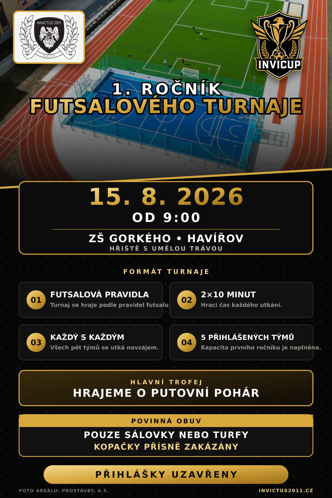

Invi Cup 2026: první ročník
V sobotu 15. srpna od 9:00 se u ZŠ Gorkého v Havířově představí pět týmů v prvním ročníku našeho venkovního futsalového turnaje.
Číst článekAktuálně z klubu
Zápasy, klubové události, rozhovory i příběhy ze života Invictu na jednom místě.

V sobotu 15. srpna od 9:00 se u ZŠ Gorkého v Havířově představí pět týmů v prvním ročníku našeho venkovního futsalového turnaje.
Číst článek
Invictus vstoupí do jubilejní sezony v novém. Firmám zároveň nabízíme možnost podpořit klub a dostat své logo přímo na naše zápasové dresy.
Číst článek
Patnáct let klubové historie, současná soupiska, výsledky, statistiky, fotografie i příběhy hráčů jsou nyní přehledně na jednom místě.
Číst článek